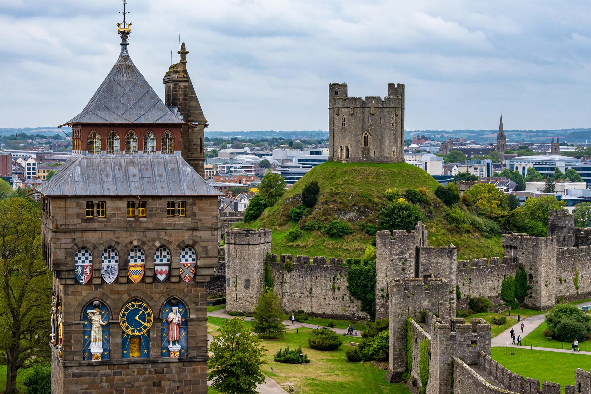

[Image placeholder: Cardiff Castle's clock tower]| Country | Wales, United Kingdom |
|---|---|
| Population | About 360,000 (city); metro over 1 million |
| Status | Capital of Wales since 1955 |
| Welsh name | Caerdydd |
**Cardiff** is the capital and largest city of Wales, on the River Taff where it meets the Severn Estuary. A small town until the nineteenth century, it exploded into the world's greatest coal-exporting port, shipping Welsh steam coal through its docks at Butetown (Tiger Bay). Declared Wales' capital in 1955, it is the seat of the Welsh Parliament (the Senedd).
Landmarks include Cardiff Castle — a Roman fort site rebuilt by the Marquesses of Bute into a flamboyant Victorian Gothic fantasy — the Principality (Millennium) Stadium, home of Welsh rugby, and the redeveloped Cardiff Bay with the Senedd building and Wales Millennium Centre ('the Armadillo').
The Bute family built the docks from 1839; by 1913 Cardiff handled more coal than any port on Earth, and its Coal Exchange set the world price of coal. Tiger Bay became one of Britain's oldest multicultural communities. The Blitz of 1941 and the coal trade's collapse hit the city hard before regeneration from the 1980s.
Cardiff is a media centre (BBC drama studios at Roath Lock filmed Doctor Who, made in the city since 2005), a university city, and a major sports venue, hosting the 2017 UEFA Champions League final. Welsh-language use is growing through Welsh-medium schools.